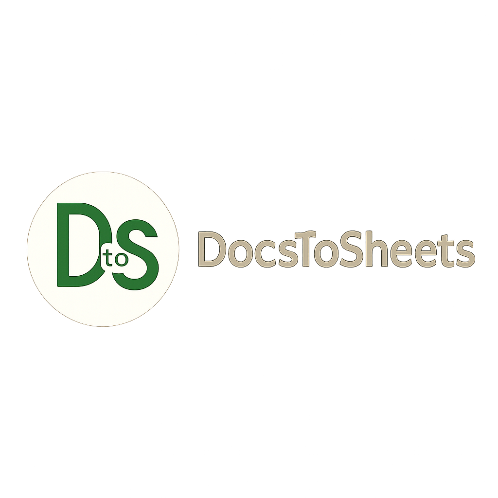

Create Interactive Presentations, Newsletters, and Reports

🔍 What is Microsoft Sway?
Microsoft Sway is a cloud-based digital storytelling tool that helps users create interactive presentations,
newsletters, reports, resumes, and personal stories. Unlike PowerPoint, Sway focuses more on layout automation and
visually engaging designs with ease of sharing and embedding.
✨ Key Features of Sway
Web-based design – no installation required
Smart design engine that automatically arranges content beautifully
Embed YouTube, Tweets, PDFs, and charts with ease
Built-in themes and customizable layouts
Responsive design for all screen sizes (mobile, tablet, desktop)
Secure sharing via link or embedding in websites
Integration with OneDrive, Bing Images, and YouTube
💡 Tip: No need to design slides manually. Just add your content, and Sway handles the formatting
automatically!
🎓 Real-time Examples
👨🎓 For Students:
Create interactive portfolios, project reports, resumes, and presentations. For example, a student can build a
Sway showcasing their final year project with embedded videos, charts, and demo links.
👩🏫 For Teachers:
Use Sway to send weekly newsletters, create engaging lesson summaries, digital assignments, or syllabus
breakdowns. Great for flipping the classroom digitally.
💼 For Professionals:
Share marketing updates, product overviews, proposals, and status reports with a clean, web-friendly format that
impresses clients and teams alike.
📌 Add-ons & Integrations
OneDrive: Pull documents and images from your cloud directly into Sway
Bing Search: Add royalty-free images, videos, tweets, and charts
YouTube Integration: Embed videos directly for demos and tutorials
Microsoft Forms: Insert quizzes or polls for interactive content
Office 365 Integration: Seamless sharing within your organization or school
✅ Example: A school can prepare a monthly digital newsletter using Sway, embed it on the school
website, and track how many students viewed it.